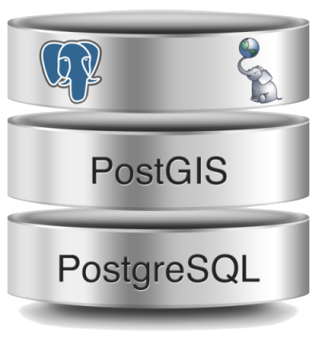
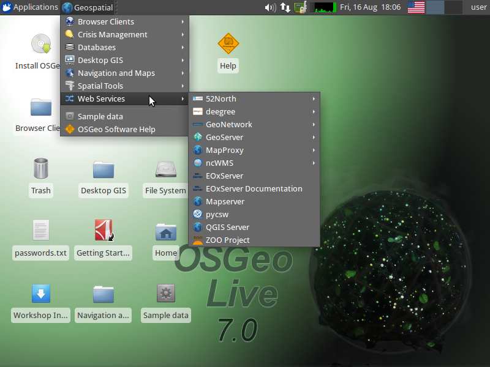
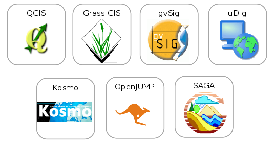
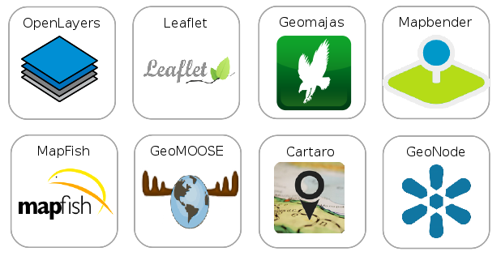
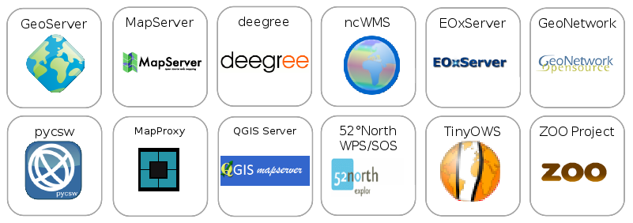
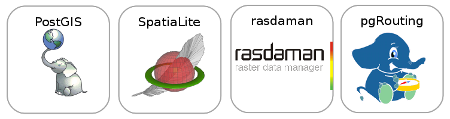
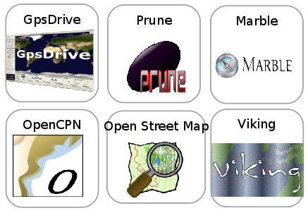
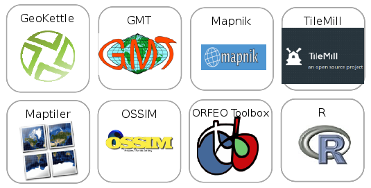
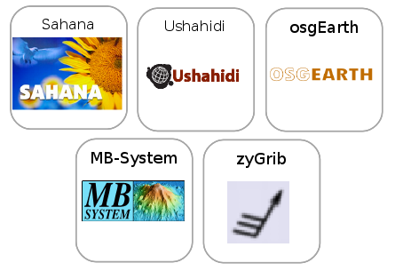
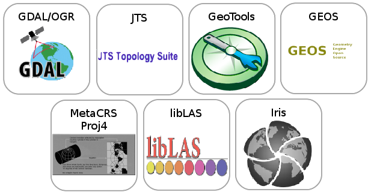

Εισαγωγή στην PostGIS

Αργυρός Αργυρίδης, Άγγελος Τζώτσος
Μέλη OSGeo, Ερευνητές ΕΜΠ
Οργανισμός Ελεύθερου Γεωχωρικού Λογισμικού (OSGeo)
Από το 2006 υποστηρίζει:
- Το Ελεύθερο Γεωχωρικό Λογισμικό
- Την Εκπαίδευση
- Τα Ανοιχτά Δεδομένα
OSGeoLive
|  |
- Διανομή GNU/Linux
- 60+ Ελεύθερα Γεωχωρικά Λογισμικά
- Δοκιμαστικά Ανοιχτά Δεδομένα
- Εγχειρίδια Χρήσης
- Μεταφρασμένο σε πολλές γλώσσες. Στα Ελληνικά από την Κοινότητα Ελεύθερου Λογισμικού ΕΜΠ και ΣΑΤΜ
Λογισμικά OSGeoLive

Κριτήρια ποιότητας
- Σταθερό, δοκιμασμένο λογισμικό
- Πολύ ενεργή κοινότητα
Desktop GIS

Browser Facing GIS

Web Services

Data Stores

Navigation and Maps

Spatial Tools

Domain Specific GIS

Geospatial Libraries

Διαδεδομένες χωρικές βάσεις δεδομένων
- PostGIS
- Oracle Spatial
- Microsoft SQL Server 2008
PostGIS (;)
- H PostGIS αποτελεί επέκταση της PostgreSQL
- Προσθέτει υποστήριξη για γεωγραφικά αντικείμενα, επιτρέποντας την εκτέλεση χωρικών ερωτημάτων σε γλώσσα SQL
Παράδειγμα Χωρικού Ερωτήματος σε γλώσσα SQL
SELECT monument.name
FROM city, monument
WHERE ST_Contains(city.geom, monument.geom)
AND city.name = 'Athens';
Εταιρείες και Λογισμικά που υποστηρίζουν την PostGIS
- ESRI
- INTERGRAPH
- MapInfo
- GeoServer
- GDAL
- GRASS GIS
- Quantum GIS
- ...
Μερικές Βασικές Συναρτήσεις (1)...
- ST_Length(A): Υπολογισμός του μήκους της οντότητας Α
- ST_Distance(A, B): Υπολογισμός της απόστασης των οντοτήτων Α και Β
- ST_DWithin(A, B, r): Έλεγχος αν η οντότητα Β βρίσκεται σε απόσταση r από την οντότητα Α
Μερικές Βασικές Συναρτήσεις (2)...
- ST_Area(A): Υπολογισμός εμβαδού της οντότητας Α
- ST_Intersects(A, B): Υπολογισμός του κοινού χωρίου των οντοτήτων Α και Β
Αποκωδικοποίηση Γεωμετριών
- ST_AsText(A): Επιστρέφει τη γεωμετρία σε μορφή Well Known Text
- ST_AsBinary(A): Επιστρέφει τη γεωμετρία σε μορφή Well Known Binary
Κωδικοποίηση Γεωμετριών
- ST_GeomFromWKB(bin): Κατασκευάζει μια νέα γεωμετρία από Well Known Binary
- ST_GeomFromText(str): Κατασκευάζει μια νέα γεωμετρία από Well Known Text
Μετατροπή μεταξύ διάφορων τύπων κωδικοποιήσεων
- ST_AsGeoJSON()
- ST_AsGML()
- ST_AsKML()
- ST_GeomFromGML()
- ST_GeomFromKML()
Κατασκευαστές Γεωμετριών (1)
- ST_Buffer(A, r): Επιστρέφει μια γεωμετρία η οποία αναπαριστά όλα τα σημεία των οποίων η απόστασή τους από τη γεωμετρία είναι μικρότερη ή ίση της απόστασης r
- ST_MakeLine(point_array): Δημιουργεί μια γραμμή με κορυφές αυτές που ορίζονται στον πίνακα point_array
Κατασκευαστές Γεωμετριών (2)
- ST_BuildArea(A): Επιστρέφει ένα πολύγωνο με βάση τη δεδομένη γεωμετρία Α (απλή ή σύνθετη)
- ST_Union(GSet): Συγχωνεύει τις γεωμετρίες που περιέχονται στο σύνολο γεωμετριών GSet παράγοντας μία καινούρια εννιαία γεωμετρία
Παράδειγμα ST_MakeLine
Παράδειγμα ST_Union
 |
Prepared Geometries
- Σε επεξεργασίες που αφορούν τομές ή/και επικαλύψεις μεταξύ πολυγώνων μία γεωμετρία συγκρίνεται πολλές φορές με άλλες γειτονικές της
- Η PostGIS για να ελαττώσει το χρόνο υπολογισμού, προϋπολογίζει στοιχεία τα οποία σε άλλη περίπτωση θα υπολογιζόντουσαν πολλές φορές, μειώνοντας έτσι το χρόνο εκτέλεσης του ερωτήματος
Εύρεση σημείων εντός πολυγώνων
SELECT ...
FROM points, polygons
WHERE ST_Intersects (polygons.geom, points.geom)
Γραμμικά συστήματα αναφοράς
- Σε εφαρμογές οδοποιίας είναι σημαντικό να ξέρουμε τη χιλιομετρική θέση ορισμένων αντικειμένων (πχ πινακίδες)
- Η PostGIS παρέχει μια πληθώρα συναρτήσεων που επιτρέπει την ανάπτυξη γραμμικών συστημάτων αναφοράς
Συναρτήσεις γραμμικών συστημάτων αναφοράς (1)
- ST_AddMeasure(line, start, end): Επιστρέφει μια γεωμετρία με στοιχεία τα οποία έχουν γραμμικά παρεμβληθεί ανάμεσα στην αρχή και το τέλος
- ST_LocateBetween(line, a, b): Αποκόπτει το τμήμα της γραμμής line από το measure a έως το b
Συναρτήσεις γραμμικών συστημάτων αναφοράς (2)
- ST_LocateAlong(Geom, measure, offset): Παρεμβάλει πάνω στη γεωμετρία Geom στη θέση measure και σε απόσταση offset ένα σημείο. Αν το offset είναι θετικό θα παρεμβληθεί στα αριστερά της γεωμετρίας ενώ αν είναι αρνητικό στα δεξιά
- ST_Line_locate_Point(line, point): Εντοπίζει την προβολή ενός σημείου σε μια γραμμή ως ποσοστό της απόστασης της γραμμής
Παραδείγματα Γραμμικών Συστημάτων Αναφοράς
Καμπύλες...
Μερικοί τύποι δεδομένων
- Curvestring
- Compoundcurve
- Curvepolygon
Κατασκευαστές καμπυλών
- ST_CurveToLine(curveGeom): Μετατροπή καμπύλης σε γραμμή
- ST_LineToCurve(line): Μετατροπή γραμμής σε καμπύλη
Παράδειγμα μετατροπής καμπύλης σε γραμμή και γραμμής σε καμπύλη
Μετασχηματισμοί συντεταγμένων
- Στην επεξεργασία γεωχωρικών δεδομένων είναι σύνηθες να μετασχηματίζονται δεδομένα μεταξύ συστημάτων αναφοράς
- ST_Tranform(geom, SRID): Μετασχηματίζει τη δεδομένη γεωμετρία geom στο σύστημα αναφοράς που ορίζει ο κωδικός SRID
- Προϋποθέτει πως η γεωμετρία geom έχει γνωστό προβολικό σύστημα(!)
SRID: Spatial Reference System Identifier
Υποστηριζόμενοι τύποι προβολικών συστημάτων...
- Albers
- Lambert
- Mercator
- Sinusiodal
- Stereographic
- UTM
- Gnomic
- Orthographic
- Robinson
- MIller
- ....
Υποστηρίζονται όλα τα συστήματα αναφοράς της GDAL/OGR...
Eισαγωγή δεδομένων στην PostGIS
Από τερματικό...
shp2pgsql -D -s 4326 -i countries.shp countries | psql -U userName -d demodb
Από γραφικό περιβάλλον...

Υποστηρίζεται εισαγωγή οποιονδήποτε διανυσματικών δεδομένων συμβατών με την GDAL/OGR...
Τρισδιάστατες Γεωμετρίες
Η PostGIS επιτρέπει την υποστήριξη και διαχείριση τρισδιάστατων γεωμετριών
- ST_3dDistance(A, B)
- ST_3dLength(A)
- ST_3dPerimeter(A)
- ST_3dIntersects(A, B)
- ST_3dDWithin(A, B, r)
Index-based Searching (1)
- Οι έλεγχοι συσχετίσεων μεταξύ δύο γεωμετριών δημιουργούν φόρτο επεξεργασίας
- O φόρτος εργασίας αυξάνεται με την πολυπλοκότητα της γεωμετρίας (περισσότερα σημεία...)
- H αναζήτηση με βάση ευρετήρια επιταγχύνει τους υπολογισμούς
Index-based Searching (2)
- Στηρίζεται στη σύγκριση των ελάχιστα περιγεγραμμένων τετραπλεύρων (bounding box) των γεωμετριών
- Eπιλογή ή απόρριψη των γεωμετριών των οποίων τα ελάχιστα περιγεγραμμένα τετράπλευρα συσχετίζονται ή όχι
Raster + PostGIS
- ST_Envelope(raster): Υπολογισμός του ελάχιστα περιγεγραμμένου τετραπλεύρου σε vector μορφή
- ST_ConvexHull(raster): Υπολογισμός του περιγράμματος της εικόνας, συμπεριλαμβανομένου και των τιμών nodata
- ST_Polygon(raster): Υπολογισμός του περιγράμματων των εικονοστοιχείων που έχουν τιμές
Τοπολογία στην PostGIS (1)
- Στόχος είναι η διαχείριση τοπολογικών συσχετίσεων όπως κόμβων, ακμών και χωρίων
- Η ύπαρξη τοπολογίας επιτρέπει στις γεωγραφικές οντότητες να έχουν κοινά στοιχεία
- Κόμβος: Σημείο τομής δύο γραμμών
- Ακμή: Συνεχής γραμμή που αρχίζει και τελειώνει σε κόμβους
- Χωρίο: Περικλείεται από ακμές
Τοπολογία στην PostGIS (2)
- Με αυτό τον τρόπο εξασφαλίζεται η χωρική συνέχεια στα όρια των οντοτήτων
- Μειώνεται ο αποθηκευτικός χώρος καθώς οι ακμές αποθηκεύονται μόνο μία φορά
Άλλα χαρακτηριστικά
- Υποστρήριξη γεωγραφικών συναρτήσεων
- Index-based αναζήτηση με χρήση K Nearest Neighbor
- Έλεγχος ορθότητας των γεωμετριών
- Τριγωνισμοί Delaunay
- ...
Πηγές...
Επίσημο εγχειρίδιο PostgreSQL 9.3.4Επίσημο εγχειρίδιο PostGIS 2.1
PostGIS Frenzy FOSS4G
Santro Santilli: Topology with PostGIS